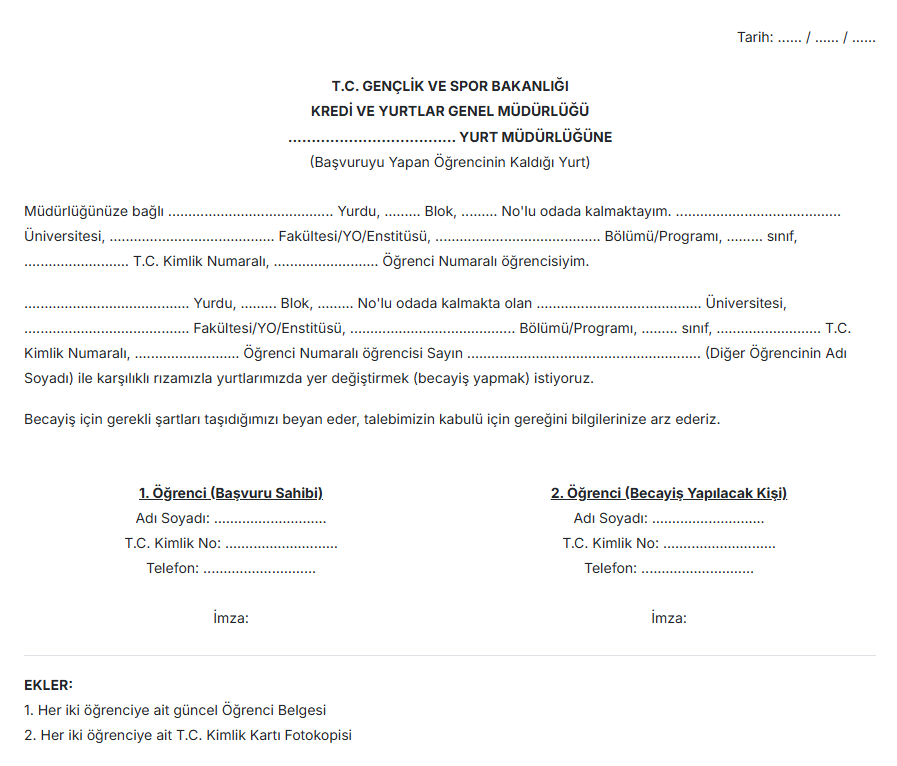

KYK Yurt Değişiminde Yeni Dönem
Becayiş ile KYK yurtları arasında değişim yapmak artık çok kolay!
Becayiş Nasıl Yapılır? Adım Adım Rehber
Becayiş, Gençlik ve Spor Bakanlığı'na bağlı yurtlarda barınan öğrencilerin, karşılıklı rıza ile kayıtlı oldukları yurtları birbirleriyle değiştirmelerini daha kolay bir hale getirmeyi amaçlayan resmi olmayan bir sitedir. Temel amacı, öğrencilerin çeşitli nedenlerle (ulaşım, sosyal çevre, yurt koşulları vb.) ortaya çıkan yurt değiştirme ihtiyaçlarını, boş kontenjan beklemeden, karşılıklı anlaşmaya vararak çözmelerine olanak tanımaktır. Bu işlem, öğrencilerin eğitim aldıkları birime veya sosyal olanaklara daha yakın yurtlara geçmelerine, farklı fiziksel koşullara sahip odaları tercih etmelerine veya arkadaşlarıyla aynı yurtta kalmalarına imkan verebilir.
KYK Becayiş Başvuru Şartları
Karşılıklı yurt değişimi (becayiş) yapabilmek için aşağıdaki koşulların her iki öğrenci tarafından da karşılanması zorunludur:
- Aktif olarak bir yükseköğretim programına kayıtlı olmak.
- GSB'ye bağlı bir yurtta resmi kaydı bulunmak ve yurtta kalıyor olmak.
- Aynı cinsiyette olmak ve değişilecek yurtların ilgili cinsiyete hizmet vermesi.
- Daha önce yurttan "geçici çıkarma" veya "kesin çıkarma" disiplin cezası almamış olmak.
- Her iki tarafın da becayiş işlemine açık rızasının olması.
- Genellikle vadesi geçmiş yurt ücreti borcunun bulunmaması (Yurt idaresinden teyit edilmelidir).
Gerekli Başvuru Belgeleri
Becayiş başvurusu için her iki öğrencinin de hazırlaması gereken temel belgeler şunlardır:
1) Karşılıklı Becayiş Dilekçesi
Her iki öğrencinin bilgilerini içeren ve ıslak imzalı ortak dilekçe. (Örnek aşağıdadır).
2) Güncel Öğrenci Belgesi
Aktif öğrenciliği gösteren, son 1 ay içinde alınmış, e-Devlet onaylı (barkodlu/karekodlu) veya üniversiteden alınmış belge.
3) T.C. Kimlik Kartı Fotokopisi
Önlü arkalı, okunaklı fotokopi.
Adım Adım KYK Becayiş Başvuru Süreci
Becayiş işlemleri genel olarak aşağıdaki adımları içerir:
1) Partner Bulma ve Anlaşma:
Uygun bir becayiş partneri bulunur ve tüm detaylarda (yurtlar, şartlar, zamanlama) karşılıklı mutabakata varılır.
2) Belgelerin Hazırlanması:
Her iki öğrenci de gerekli belgeleri eksiksiz olarak temin eder. Ortak dilekçe hazırlanır ve imzalanır.
3) Yurt Müdürlüklerine Başvuru:
Her öğrenci, hazırlanan dilekçe ve kendi belgeleriyle birlikte, kendi kaldığı yurdun müdürlüğüne şahsen başvuruda bulunur.
4) Değerlendirme ve Onay:
Yurt müdürlükleri başvuruları inceler, öğrencilerin şartlara uygunluğunu kontrol eder ve gerekli görürlerse kendi aralarında iletişime geçerler. Uygun bulunması halinde becayiş talebi onaylanır.
5) Bilgilendirme:
Başvurunun sonucu (onay veya ret) genellikle öğrencilere yurt müdürlükleri tarafından bildirilir. Süreci takip etmek için başvuru sonrası idare ile iletişimde kalınabilir.
6) Taşınma ve Yerleşme:
Onay sonrası, belirlenen süre içinde eski yurttan ayrılış yapılır ve yeni yurda giriş işlemleri tamamlanarak yerleşilir. (Detaylar aşağıdadır).
Onay süresi yurtların yoğunluğuna göre değişmekle birlikte genellikle birkaç iş günü ile 2-3 hafta arasında sürebilir.
KYK Becayiş Dilekçe Örneği
 İndirmek için tıklayınız.Sıkça Sorulan Sorular
Becayiş işlemi ne kadar sürer?
Onay süresi yurt müdürlüklerinin yoğunluğuna ve belgelerin durumuna göre değişir. Genellikle 3 ila 15 iş günü arasında sonuçlanabilir, ancak kesin bir süre yoktur.
Farklı şehirler arasında becayiş mümkün mü?
Hayır, standart prosedürde iller arası karşılıklı becayiş yapılmaz. Bu durumlar genellikle mazerete dayalı nakil kapsamında değerlendirilir ve boş kontenjan gerektirir.
Becayiş için ücret ödenir mi?
Başvuru işleminin kendisi ücretsizdir. Ancak geçilecek yurdun aylık ücreti veya depozitosu farklı (daha yüksek) ise, aradaki farkın ödenmesi gerekebilir.
Farklı yurt veya oda tipleri arasında becayiş olur mu?
Evet, genellikle mümkündür. Farklı yurt tipleri (1. tip, 3. tip vb.) veya aynı yurt içindeki farklı oda tipleri (ranzalı, bazalı vb.) arasında becayiş yapılabilir. Ücret ve depozito farklarına dikkat edilmelidir.
Becayiş başvurusu neden reddedilir?
Başvuru şartlarının sağlanmaması, eksik/hatalı belge, vadesi geçmiş yurt borcu veya (nadiren) idari nedenler gibi durumlarda başvuru reddedilebilir.
Becayişten sonra eski yurda geri dönülebilir mi?
Hayır, işlem tamamlandıktan sonra otomatik geri dönüş hakkı yoktur. Eski yurda dönmek için yeni bir becayiş veya (kontenjan varsa) nakil süreci başlatılmalıdır.
Hazırlık/1. sınıf öğrencisi becayiş yapabilir mi?
Evet, şartları sağladıkları sürece yapabilirler. Ancak akademik yılın başlangıcındaki yoğunluk nedeniyle başvuruların kabulü gecikebilir veya belirli bir süre (örn: ilk vizeden sonra) beklenebilir.
Becayiş depozitoyu nasıl etkiler?
Geçilen yurdun depozito miktarına göre değişir. Yüksekse fark ödenir, düşükse fazla kısım iade edilir veya ücretten mahsup edilir. Genellikle mevcut depozito yeni yurda aktarılır.
Birden fazla kez becayiş yapılabilir mi?
Yönetmeliklerde genellikle bir sınır belirtilmemiştir. Şartlar sağlandığı ve partner bulunduğu sürece teorik olarak mümkündür.